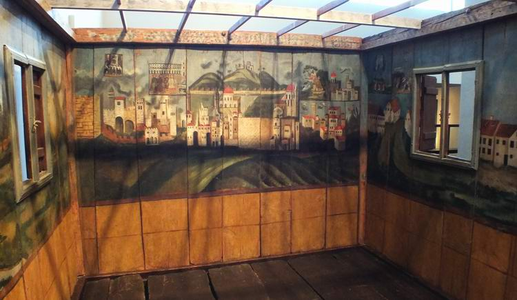
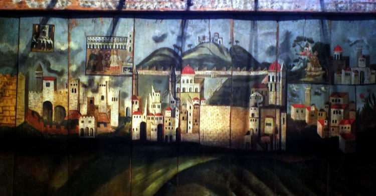
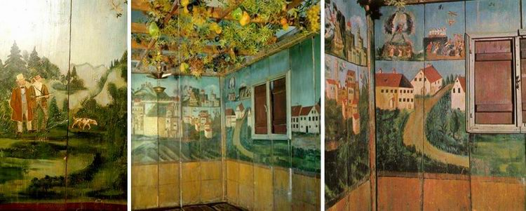
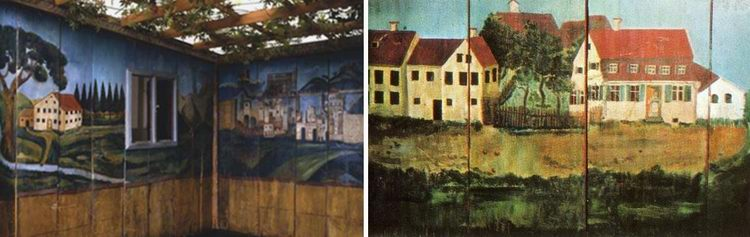
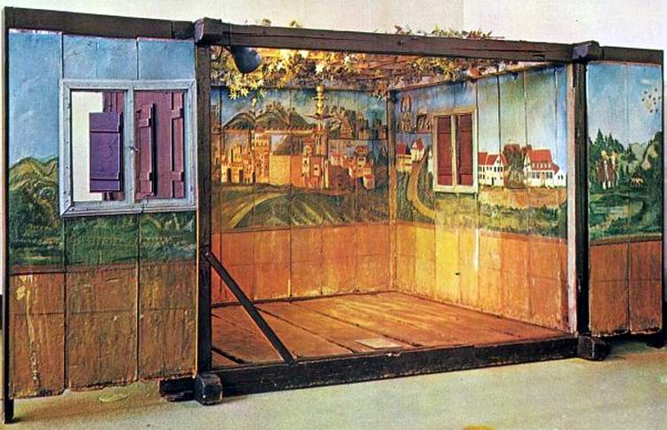

ПРАЗДНИК СУККОТ. МЕЧТА семьи Деллер
Еще в 1930-х годах, еще до того, как нацисты пришли к власти в Германии, семья немецких евреев Авраама и Софи Деллер строила у себя во дворе сукку - деревянный шалаш. Это были особенные кущи, которые передавались в семье Деллер из поколения в поколение. И каждый год после Йом Киппура семья принималась за их возведение согласно традиции и заповедям Торы.

С приходом нацистов к власти в Германии устраивать эту сукку становилось все опаснее...
***
ПРАЗДНИК СУККОТ. МЕЧТА семьи Деллер
Первыми обладателями и инициаторами создания этой реликвии были Нафтали и Циля Деллер – немецкие евреи, жившие в Германии в 19-ом веке. Они обратились Йозефу Шварцу местному художнику и ученому с заказом – расписать внутреннюю часть их праздничной Сукки. Так что снаружи она ничем не отличалась от других суккот, устраиваемых по заповеди на праздник. Но внутри... Это было произведение искусства и настоящее сокровище.
То, что было внутри, создавало у находящихся в ней в течении семи дней праздника впечатление двоякой реальности. Или точнее так – соединение реальности и мечты.
Если три стены сукки содержали на себе панорамы тех мест, где проживала семья Деллер, со сценами из тогдашней немецкой жизни, то четвертая стена представляла иную реальность. Обращенная на восток, она была записана видами Иерусалима.

Эта стена открывалась лишь при входе в сукку. А сукка служила своего рода машиной времени, инструментом претворения несбыточной мечты в реальность - «Ба шана а-ба беИрушалаим» (В следующем году в Иерусалиме). Так евреи 19-го века приближали свою неисполнимую мечту. Все остальные стены содержали в себе оконные или дверные проемы. Только стена, обращенная на восток была глуха к тому, что происходило с наружи и открыта всякому пребывающему внутри сукки и исполняющему заповедь Торы. Если в ту, близкую им реальность, они могли свободно проникнуть взглядом через дверь и окна (изнутри наружу или наоборот), то только Иерусалима можно было достичь по вере и через исполнение заповеди Суккот.
Художник Йозеф Шварц работал по заказу семьи Деллер и в соответствии с их инструкциями. Картины, покрывающие все стены сукки изображают сцены, взяты из различных источников.
Яркие, детальные панорамы Иерусалима и Стены Плача составляют центральную стену сукки. Сюжет росписи был скопирован с литографии 19-го века, созданной в Эрец-Исраэль. Над ним, пять виньеток - по образцу иллюстраций к праздничному молитвеннику (Махзор) напечатанному в издательстве Sulzbach в 1826 - художественные сцены, связанные с основными еврейскими праздниками: 1. жертвоприношение ягненка на Пасху, 2. Дарование Торы на Шавуот, 3. Акида - связывание Исаака, - отрывок Торы, читаемый на Рош ха-Шана, 4. принесение жертвы первосвященником на Йом Кипур, и 5. hакафот (הקפות - обычай танцевать со свитком Торы в праздник Симхат Тора) на Суккот.

На других стенах сюжеты, воспроизводящие немецкие деревни и ландшафты, и реальных жителей местечка этого времени. По правую руку – изображение самой хозяйки Цили Деллер, владелицы сукки, ожидающей у входа своего дома. На задней стенке изображен местный барон, собравшийся на охоту, - покровитель евреев деревни.

Расписные деревянные доски сукки сочтены и пронумерованы, чтобы они могли быть легко собраны на следующий год. И каждый год теперь уже сын Нафтали и Цили Деллер – Авраам вместе со своей женой Софи устраивал фамильную сукку (я бы сказал, - фамильную мечту – «в следующем году в Иерусалиме»), собирая номерные доски с росписью в нехитрый шалаш во дворе своего дома, пока в Германии не пришли к власти нацисты.
И поэтому в 1935 году эта сукка была вывезена из местечка Фишах близ Аугсбурга контрабандой и передана при посредничестве доктора Генриха Фейхтвангера в дар от семьи Деллер музею Школы Бецалель в Иерусалиме.

В 2010г. заветная Деллер-сукка вновь представлена в экспозиции музея Израиля после восстановления лабораториями Atelier регионального отделения реставрации в Бретани, Франция, финансируемого Альберто Деллером, внуком первоначальных владельцев, и его жены Фридой Клейн-Деллер (Кито, Эквадор), в память об их сыне, Пьере Филиппе, и в честь его детей, Аарона и Натали Деллер.
В статье использованы материалы 1, 2, 3, 4.
Здесь можно посмотреть фото нашей сукки и как мы ее строили.
Автор: Эфраим Калиш